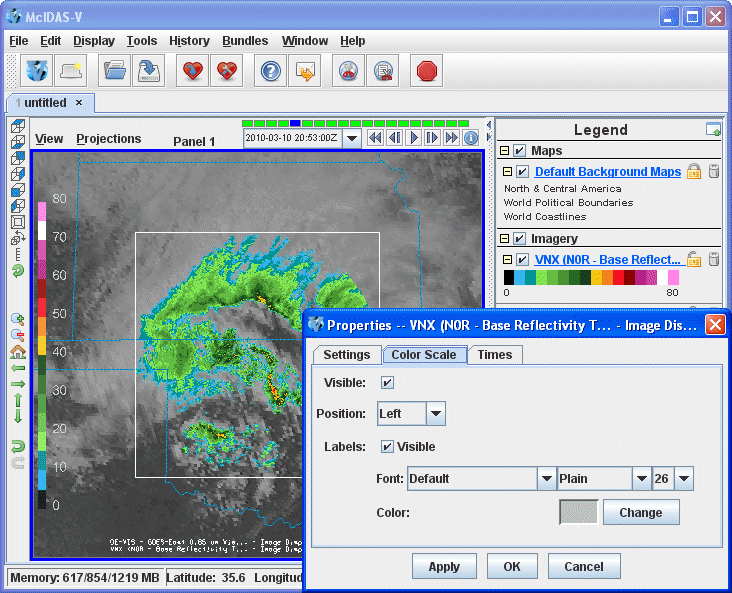

Color Scale
For those controls that include color tables, the color
scale can be displayed in the Main Display window. Use the Edit->Properties->Color
Scale menu in the Layer Controls tab of the Data Explorer to configure the visibility, positioning, and
labeling of the color scale.

Image 1: Color Scale Properties DialogProperties
- Visible - Determines if the color scale will be shown in the Main Display window. The scale is visible when the box is checked.
- Display Unit - Adds a unit to the color scale, as long as the color scale is set as visible.
- Position - Represents the location of the color scale in the display.
- Labels - Determines if labels will be plotted along with the color scale. When the Visible option is checked, labels will be displayed.
- Font - Represents the font, style, and size of the font plotted in the color scale's labels.
- Color - Represents the color that the labels will be plotted in for the color scale.